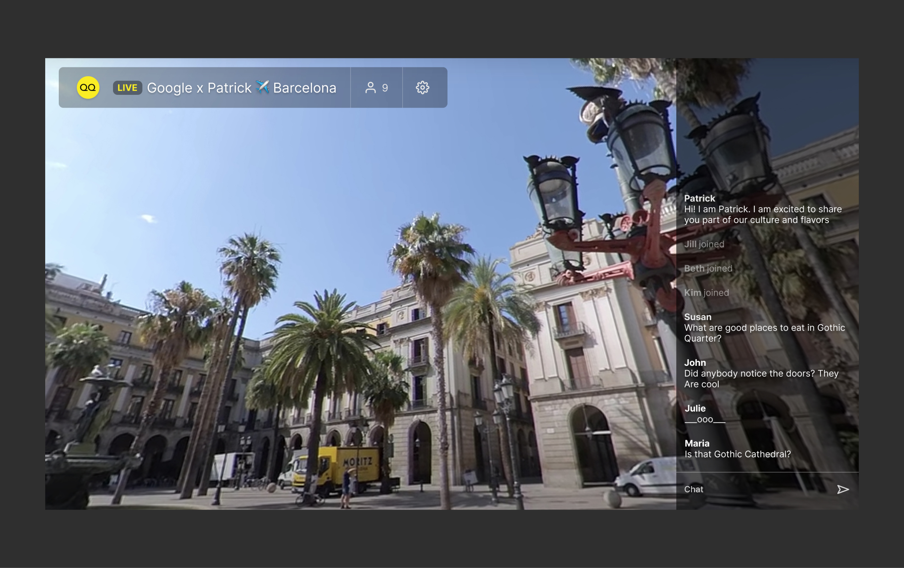
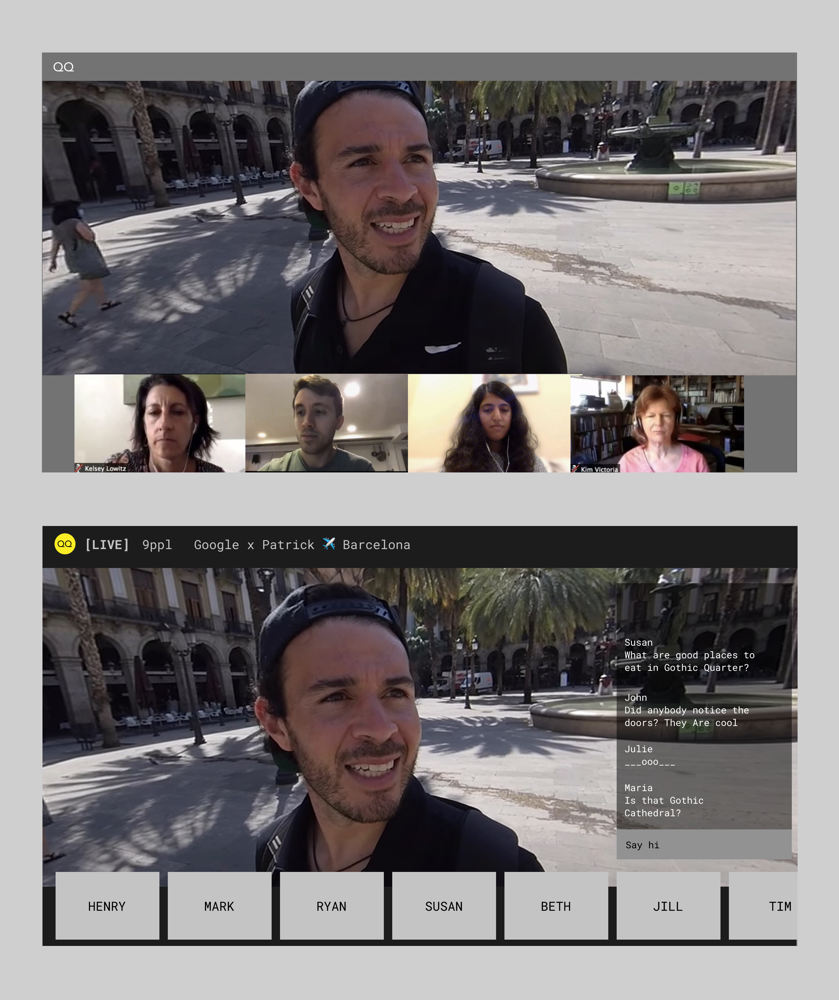

UPDATE
Soon after we redesigned streams at Oqqur, team launched its first private tours for corporates and schools. This success helped Oqqur attract partnership which empowered them to launch a mobile app.
PROBLEM
Team reached out to me to lead design efforts that will help them validate promising use cases they have identified, onboard early adopters and open doors to growth of the company. My role was to:
1. identify product adjustments that help users connect with 360 experiences. Prioritise and communicate them with development team
2. develop visual style that would better communicate Oqqur's mission, passion and cutting edge technology
BACKGROUND
You can find 360 videos in other platforms such us Youtube or Facebook, but it's not taking off there. We think it's because 360 is treated as any other video.
But Oqqur doesn't think it's the same. 360 gives you a new reality. You are not limited by viewport of your device and you are no longer looking only on what streamer wants to show you. Experiences in 360 are more authentic and are different from what we know. How should they look?
PRINCIPLES
I defined two core principles that guided us. I found them on itersection of what users and the team find important.
We believe we will build a great product when we follow them. That's why, we question anything what we think of doing how aligned it is with them. We work only on those ideas that make the biggest leaps.
1. LIMITLESS
We wanted to remove feeling of being trapped in a box. 360 gives you freedom to look anywhere without relying on what guide shows you.
2. BONDING
We knew we cannot deliver team building experience with only chat. There is no bonding. We pursuided a vision of gathering people around guide in a way they won't realise the physical distance.
PEOPLE GRID
We used to show who joined the tour in list displayed in popup. That wasn't enough. Viewers need to feel they are experiencing the tour with their peers and they need to see who else is there.
Concept is inspired by video meetings apps - not in sense of showing video, but giving a spot to each joiner. We asked if joiners would feel more present and how interactions between guides and joiners would look like.
We wanted joiners easily ask questions, react and share their emotions - but scrollable panel on side is hard for that. How would it looked like if responses were associated directly with people who produce them? Like in offline world.
COMMENTS
We discussed the role of comments. Whats the point of archiving everything what was said?
They are not relevant anyway becasue context changes quickly. Showing history of comments is like showing history of your phone calls. If we dont remind people what they say, will they become more authentic?
Will even passive participants become more engaged? If people can easily respond to their comments, How conversations would change if each message had a timer, so it wouldnt stay forever?
REMOVE WAITING
Imagine, that tour starts soon. Most of the joiners are online. Everyone is looking at the same screen which tells them to wait.
Idea:
- for most of the tours joiners know each other well
- can we provide them a way of entertainment before guide starts the tour?
- it's likely that tours may not always start on time. Guides often need to face various external factors while they are preparing to go live